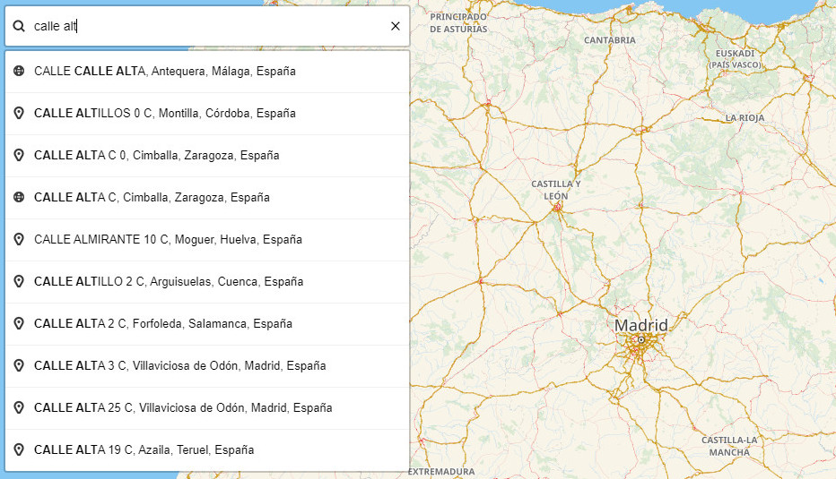
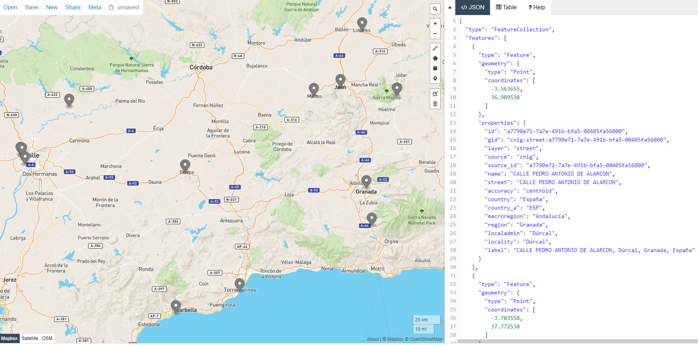
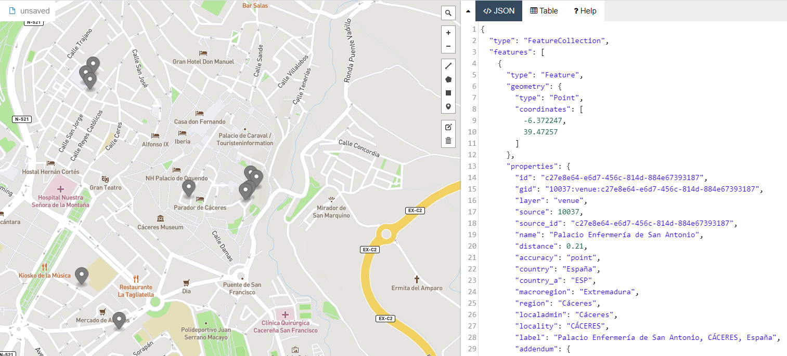
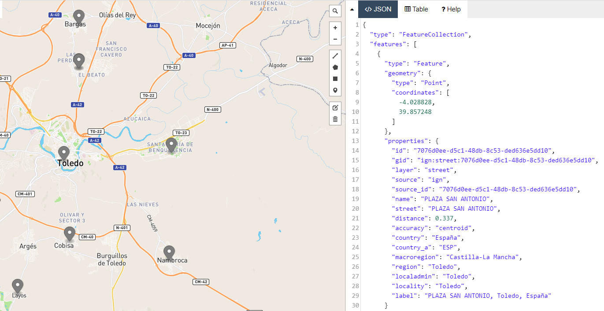
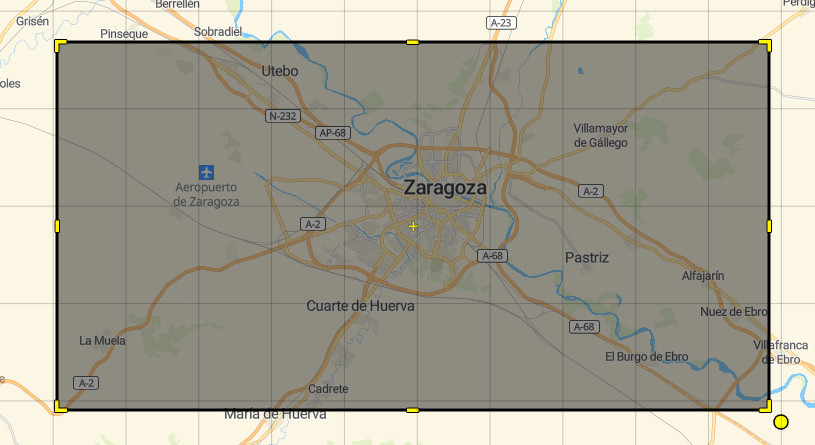
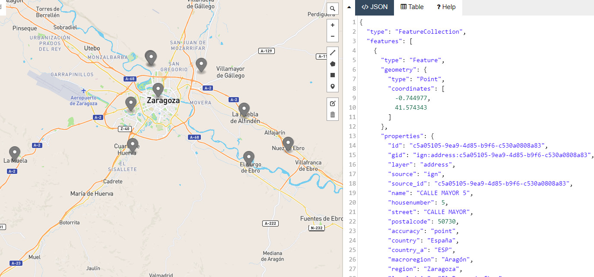
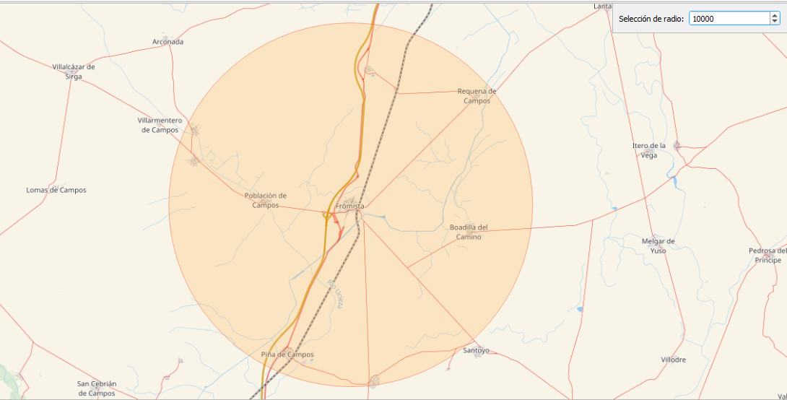
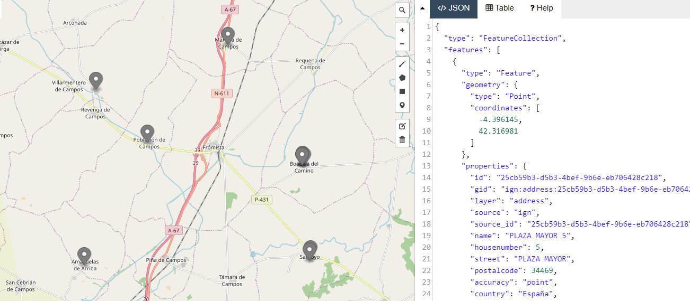

AUTOCOMPLETAR
(EN EDICIÓN)
Las aplicaciones de localización de direcciones suelen incorporar una funcionalidad de búsqueda al vuelo de direcciones, calles, topónimos y puntos de interés, a partir del texto que el usuario va introduciendo, anticipando un conjunto de posibles resultados con objeto de seleccionar uno de ellos.
Mediante este método no es necesario lanzar una petición de geocodificicación directa especificando completamente todos los términos de la búsqueda.
El autocompletado requiere interrogar sucesivamente a la url (endpoint) de este método (/v1/autocomplete), pasándole el texto que el usuario va escribiendo a medida que lo teclea. Las peticiones pueden ir acompañadas de un focus.point con objeto de priorizar los resultados cercanos a un punto dado.
En el caso de la API de geocodificación del SCN la url que responde al método autocompletar es:
https://geocoder-5-ign.larioja.org/v1/autocomplete

Cuadro de parámetros
La relación de parámetros que se pueden utilizar en las operaciones de autocompletar es la siguiente:
| Parámetro | Tipo | Obligatorio | Defecto | Descripción | Ejemplo |
|---|---|---|---|---|---|
boundary.circle.lat |
numérico coma flotante | no | ninguno | Valor de la latitud del punto central del círculo utilizado en la búsqueda en una región circular (1) | 42.268 |
boundary.circle.lon |
numérico coma flotante | no | ninguno | Valor de la longitud del punto central del círculo utilizado en la búsqueda en una región circular (1) | -4.405 |
boundary.circle.radius |
numérico coma flotante | no | 50 | Valor del radio (kilómetros) utilizado en la búsqueda en una región circular (1) | 10 |
boundary.country |
cadena de caracteres | no | ninguno | NO IMPLEMENTADO |
|
boundary.gid |
cadena de caracteres | no | ninguno | NO IMPLEMENTADO |
|
boundary.rect.max_lat |
numérico coma flotante | no | ninguno | Valor máximo de la latitud utilizado en la búsqueda en una región rectangular (1) | 41.7342 |
boundary.rect.max_lon |
numérico coma flotante | no | ninguno | Valor máximo de la longitud utilizado en la búsqueda en una región rectangular (1) | -0.6585 |
boundary.rect.min_lat |
numérico coma flotante | no | ninguno | Valor mínimo de la latitud utilizado en la búsqueda en una región rectangular (1) | 41.5453 |
boundary.rect.min_lon |
numérico coma flotante | no | ninguno | Valor mínimo de la longitud utilizado en la búsqueda en una región rectangular (1) | -1.1474 |
focus.point.lat |
numérico coma flotante | no | ninguno | Valor de la latitud utilizado en la búsqueda alrededor de un punto (1) | 42.268 |
focus.point.lon |
numérico coma flotante | no | ninguno | Valor de la longitud utilizado en la búsqueda alrededor de un punto (1) | -4.405 |
layers |
cadena de caracteres | no | todas las capas | Nombres de las capas de datos a las que se dirije la consulta, separados por comas | venue, street |
size |
integer | no | 10 | Número deseado de resultados | 5 |
sources |
cadena de caracteres | no | todas las fuentes | Listado de fuentes de datos separados por comas, codificados según lista controlada Proveedores de datos | cnig,calrj |
text |
cadena de caracteres | sí | ninguno | Texto de la dirección a buscar | Calle Mayor 10 |
Implementación
Para la implementeción de la función autocompletar es conveniente tener en cuenta las siguientes recomendaciones:
Limitación de las solicitudes
Dado que las solicitudes de autocompletar generalmente responden directamente a la entrada de texto que realiza el usuario, es importante tener en cuenta la velocidad de escritura con objeto de no colapsar las peticiones, ya que algunos dispositivos y redes pueden no responden bien cuando se envían demasiadas solicitudes, demasiado rápido, por lo que es conveniente realizar antes algunas pruebas para acotar la cadencia y el número de las peticiones.
La experiencia recomienda realizar entre 5 y 10 solicitudes por segundo, ya que este rango es el que ofrece el mejor equilibrio entre el uso de recursos y la capacidad de respuesta de autocompletar. En este sentido es recomendable configurar un regulardor en el lado del cliente con objeto de evitar exceder esos límites. Es aconsejable enviar menos solicitudes, en sus propios términos, que confiar en la limitación de velocidad del servidor para decidir qué solicitudes recibirán una respuesta completa.
Respuestas asíncronas
También es necesario tener en cuenta que las respuestas del servicio pueden ser asíncronas y no atender al mismo orden en el que fueron realizadas.
Como las peticiones se realizan a medida que el usuario escribe, pueden generarse peticiones parciales para una cadena de texto, siendo asíncronas las respuestas recibidas.
Imagine que las pulsaciones de teclado de un usuario que introduce el texto de búsqueda «madrid» genera dos peticiones síncronas: la primera con el texto «ma» y la segunda con el texto «madrid». En este caso es posible que el usuario reciba antes la respuesta a la petición «madrid» que a la petición «ma», ya que las solicitudes de autocompletar con más caracteres probablemente se resolverán más rápido, ya que el espacio de búsqueda de la consulta es más reducido.
Es necesario tener en cuenta que la recepción de respuestas asíncronas puede generar cierta confusión en los usuarios.
Uso de la geocodificación directa
Se recomientda utilizar la geocodificación directa incluso con autocompletar
Si bien el método autocompletar está diseñado específicamente para su uso con entradas introducidas por el usuario, considere la posibilidad de utilizar la geocodificación directa en ciertas situaciones.
Una forma común de utilización es enviar una solicitud autocompletar al presionar una tecla (limitando las peticiones como se comentó anteriormente), y enviar una solicitud de geocodificación directa cuando el usuario presiona la tecla Intro o un botón de envío sobre una de las soluciones ofrecidas por autocompletar.
Este enfoque permite utilizar la velocidad y el manejo de entrada parcial del método autocompletar cuando sea necesario, y la precisión y funcionalidad adicional de la geocodificación directa cuando sea posible.
Uso de librerías prediseñadas
Si tiene posibilidad, utilice una librería cliente que incorpore internamente las pautas de uso del método autocompletar.
Si utiliza Leaflet, puede valorar el uso del plugin Nextzen (anteriormente Mapzen). Este plugin ofrece todas las pautas de autocompletar descritas aquí.
Configurar el número de resultados
Como en otros métodos, la API devuelve por defecto hasta 10 resultados. Si se quiere recibir un número distinto de resultados, es posible configurar el número deseado en la llamada, utilizando el parámetro size.
| Parámetro | Tipo | Obligatorio | Defecto | Descripción | Ejemplo |
|---|---|---|---|---|---|
size |
integer | no | 10 | Número deseado de resultados | 5 |
Ejemplo de configuración de autocompletar que ofrece una relación de 15 resultados posibles en respuesta al envío de la cadena de texto «antoni».
https://geocoder-5-ign.larioja.org/v1/autocomplete?text=antoni&size=15

Enfoque local
Para priorizar la búsqueda en un área geográfica específica, como el centro del mapa del usuario o la ubicación GPS del dispositivo, se pueden utilizar los parámetros focus.point.lat y focus.point.lon. Esto aumenta los resultados relevantes a nivel local.
| Parámetro | Tipo | Obligatorio | Defecto | Descripción | Ejemplo |
|---|---|---|---|---|---|
focus.point.lat |
numérico coma flotante | no | ninguno | Valor de la latitud utilizado en la búsqueda alrededor de un punto (1) | 42.268 |
focus.point.lon |
numérico coma flotante | no | ninguno | Valor de la longitud utilizado en la búsqueda alrededor de un punto (1) | -4.405 |
Por ejemplo, si se quiere centrar la petición de autocompletado del ejemplo anterior, texto=«antoni», en la ciudad de Cáceres, de coordenadas de referencia latitud,longitud: 39.4744366,-6.3719358, la sintaxis a emplear es:
que ofrece los siguientes 10 resultados:
Palacio Enfermería de San Antonio, CÁCERES, España
TR BARRIO SAN ANTONIO, CACERES, España
Ermita de San Antonio, CÁCERES, España
CALLE BARRIO DE SAN ANTONIO, Cáceres, España
VI BARRIO SAN ANTONIO, CACERES, España
Asociación de Vecinos Antonio Canales, CÁCERES, España
PLAZA ANTONIO CANALES, CACERES, España
Parque de Antonio Canales, CACERES, España
CALLE CATEDRATICO ANTONIO SILVA, CACERES, España
CALLE ANTONIO REYES HUERTAS, CACERES, España

Nota
Obsérvese que como no se ha especificado en la petición ninguna capa en particular, los resultados obtenidos deberían corresponder a las tres capas posibles: venue, address y street, solo que en este caso por tratarse de una petición muy genérica en la que no se especifica ninguna numeración, el servidor prescinde de los resultados de la capa address para optimizar el tiempo de respuesta."warnings": [ "performance optimization: excluding 'address' layer"
Si se quiere realizar la misma petición centrando los resultados en la ciudad de Toledo de coordenadas de referencia latitud,longitud: 39.8565733,-4.0249840, la sintaxis a emplear en este caso es:
Arrojando los siguientes resultados:
PLAZA SAN ANTONIO, Toledo, España
CALLE ANTONIO LOPEZ, CERCA DE COBISA (LA), Toledo, España
CALLE ANTONIO SAURA, La Cruz del Portillo, Toledo, España
CALLE ANTONIO SAURA-LOS ALMENDROS, CRUZ DEL PORTILLO (LA), Toledo, España
PLAZA POETA ANTONIO MACHADO, POLIGONO SANTA MARIA DE BENQUERENCIA, Toledo, España
CALLE ANTONIO MACHADO, BARGAS, Toledo, España
CALLE SAN ANTONIO, NAMBROCA, Toledo, España
CALLE JOSE ANTONIO, LAYOS, Toledo, España

El método autocompletar puede promover los resultados cercanos a la parte superior de la lista, al mismo tiempo que permite que las coincidencias importantes más lejanas sean visibles. Por ejemplo, buscando un caserío de nombre «Etxegorri» con un enfoque en la población de Doneztebe/Santesteban (Navarra):
si se realiza la petición autocompletar sin especificar ningún enfoque:
https://geocoder-5-ign.larioja.org/v1/autocomplete?text=etxegorri
los resultados obtenidos por orden de preferencia son:
Etxegorri Etxea, Goizueta, Navarra, España
Etxegorri, Doneztebe/Santesteban, Navarra, España
pero sin centramos la pregunta en el entorno de la población de Doneztebe/Santesteban (Navarra) de coordenadas de referencia latitud,longitud: 43.130962,-1.6687443, el orden de las respuestas prioriza la más cercana al punto especificado:
Etxegorri, Doneztebe/Santesteban, Navarra, España
Etxegorri Etxea, Goizueta, Navarra, España
Nota
El enfoque local se puede combinar con las distintas opciones de filtrado, con el fin de ordenar los resultados obtenidos aplicando las condiciones de filtro, en función de la distancia a un punto dado.Filtros
En la petición autocompletar es posible filtrar de antemano los resultados de distintas maneras:
Filtrado por origen de los datos
El almacén de datos de referencia en este geocodificador permite combinar datos procedentes de distintas fuentes (2)(3).
Cuando se realiza una petición autocompletar, esta se dirige por defecto al conjunto de todas las direcciones almacenadas en la base de datos.
Utilizando el parámetro sources, es posible definir sobre qué conjuntos de datos realizar la petición.
| Parámetro | Tipo | Obligatorio | Defecto | Descripción | Ejemplo |
|---|---|---|---|---|---|
sources |
cadena de caracteres | no | todas las fuentes | Listado de fuentes de datos separados por comas, codificados según lista controlada Proveedores de datos | cnig,calrj |
El siguiente ejemplo realiza una consulta autocompletar con el texto «Mayor 5» a toda la base de datos:
https://geocoder-5-ign.larioja.org/v1/autocomplete?text=Mayor 5
Esta petición ofrece como resultados datos procedentes de los siguientes proveedores:
| Código | Proveedor |
|---|---|
| cnig | Centro Nacional de Información Geográfica (CNIG) |
| dgcat | Dirección General del Catastro |
| ieca | Instituto de Estadística y Cartografía de Andalucía (IECA) |
| ign | Instituto Geográfico Nacional (IGN) |
Para realizar una petición autocompletar dirigida solamente a los datos del Instituto de Estadística y Cartografía de Andalucía (IECA), debemos utilizar la siguiente sintaxis:
https://geocoder-5-ign.larioja.org/v1/autocomplete?text=Mayor 5&sources=ieca
procediendo en este caso del IECA todos los resultados obtenidos.
Filtrado por tipo de datos
El almacenamiento de datos permite, igual que en otros métodos, diferenciar tres tipología de datos: direcciones; topónimos y puntos de interés (POIs).
Mediante el parámetro layers es posible dirigir la petición de información a las siguientes capas, con el fin de obtener el resultado deseado:
| layer (capa) | descripción |
|---|---|
| venue | topónimos; puntos de interés; nombres propios de las direcciones |
| address | puntos con una dirección postal |
| street | calles; vías; carreteras |
El uso del parámetro layers es el siguiente:
| Parámetro | Tipo | Obligatorio | Defecto | Descripción | Ejemplo |
|---|---|---|---|---|---|
layers |
cadena de caracteres | no | todas las capas | Nombres de las capas de datos a las que se dirije la consulta, separados por comas | venue, street |
Ejemplos:
Búsqueda de topónimos, puntos de interés o nombres propios de direcciones que contengan la palabra Masia: https://geocoder-5-ign.larioja.org/v1/autocomplete?text=Masia&layers=venue
Filtrado por área rectangular
El método autocompletar permite condicionar los posibles resultados a aquellos que se encuentran ubicados dentro de un área geográfica rectangular. Para ello es necesario conocer de antemano las coordenadas latitud y longitud, mínimas y máximas, que definen el rectángulo (4).
En este caso los parámetros a utilizar son los siguientes:
| Parámetro | Tipo | Obligatorio | Defecto | Descripción | Ejemplo |
|---|---|---|---|---|---|
boundary.rect.max_lat |
numérico coma flotante | no | ninguno | Valor máximo de la latitud utilizado en la búsqueda en una región rectangular (1) | 41.7342 |
boundary.rect.max_lon |
numérico coma flotante | no | ninguno | Valor máximo de la longitud utilizado en la búsqueda en una región rectangular (1) | -0.6585 |
boundary.rect.min_lat |
numérico coma flotante | no | ninguno | Valor mínimo de la latitud utilizado en la búsqueda en una región rectangular (1) | 41.5453 |
boundary.rect.min_lon |
numérico coma flotante | no | ninguno | Valor mínimo de la longitud utilizado en la búsqueda en una región rectangular (1) | -1.1474 |
Por ejemplo, para encontrar la relación de posibles resultados de una dirección que contenga el texto "mayor 5" en el entorno de Zaragoza, dentro del área rectangular que muestra la imagen, definida por las coordenadas lat_min=41.5453; lon_min=-1.1474; at_max=41.7342; lon_max=-0.6585

La sintaxis a utilizar es:
siendo estos los resultados obtenidos:
CALLE MAYOR 5, El Burgo de Ebro, Zaragoza, España
CALLE MAYOR 5, La Puebla de Alfindén, Zaragoza, España
CALLE MAYOR 5, Cuarte de Huerva, Zaragoza, España
CALLE MAYOR 5, La Muela, Zaragoza, España
CALLE MAYOR 5, NUEZ DE EBRO, Zaragoza, España
CALLE MAYORAL 5, Zaragoza, España
CALLE MAYOR (MONTAÑANA) 5, Montañana, Zaragoza, España
CALLE OSA MAYOR 5, ZARAGOZA, España
CALLE MAYOR (JUSLIBOL) 5, Juslibol, Zaragoza, España
PLAZA MAYOR (JUSLIBOL) 5, JUSLIBOL, Zaragoza, España
Como se puede comprobar en la siguiente imagen, todos los posibles resultados se encuentran comprendidos dentro del área especificada en la petición

Filtrado por área circular
Entre las restricciones que se pueden aplicar en la búsqueda al vuelo que implementa el método autocompletar, se incluye la posibilidad de restringir los resultados propuestos entre los que se encuentrar dentro de un área circular. En este caso es necesario definir un punto de referencia y el radio en km del círculo dentro del cual se realiza la búsqueda de soluciones.
Los parámetros a utilizar en este caso son los siguientes:
| Parámetro | Tipo | Obligatorio | Defecto | Descripción | Ejemplo |
|---|---|---|---|---|---|
boundary.circle.lat |
numérico coma flotante | no | ninguno | Valor de la latitud del punto central del círculo utilizado en la búsqueda en una región circular (1) | 42.268 |
boundary.circle.lon |
numérico coma flotante | no | ninguno | Valor de la longitud del punto central del círculo utilizado en la búsqueda en una región circular (1) | -4.405 |
boundary.circle.radius |
numérico coma flotante | no | 50 | Valor del radio (kilómetros) utilizado en la búsqueda en una región circular (1) | 10 |
Por ejemplo, para encontrar una dirección que contenga el texto "mayor 5" en un área circular de 10 km desde Frómista (Palencia), con coordenadas de referencia (lat,lon) 42.268,-4.405.

La sintaxis a utilizar es:
Que arroja el siguiente resultado:
PLAZA MAYOR 5, Marcilla de Campos, Palencia, España
CALLE MAYOR 5, Población de Campos, Palencia, España
CALLE MAYOR 5, Boadilla del Camino, Palencia, España
PLAZA MAYOR 5, BOADILLA DEL CAMINO, Palencia, España
PLAZA MAYOR 5, VILLOVIECO, Palencia, España
PLAZA MAYOR 5, AMAYUELAS DE ARRIBA, Palencia, España
PLAZA MAYOR 5, SANTOYO, Palencia, España
TRVA MAYOR 5, BOADILLA DEL CAMINO, Palencia, España
TRAVESIA MAYOR 5, Boadilla del Camino, Palencia, España
CALLE MAYOR 5, SANTOYO, Palencia, España
La consulta cartográfica de estos puntos muestra el siguiente resultado
